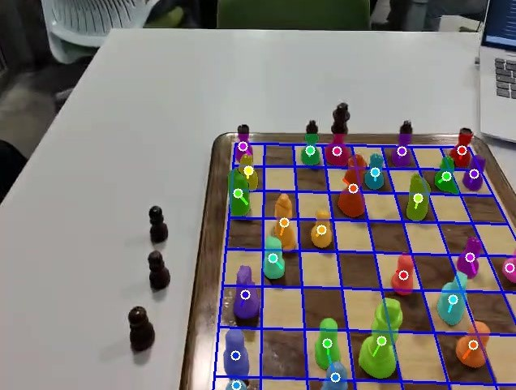

2025 — 2026•MentraOS grant project
Seenitt — Visual AI for Smart Glasses
Built a Python WebSocket backend that decodes a live H.264 smart-glasses feed. The chess assistant uses SAM 3, TensorRT/PyCUDA, OpenCV, and optical flow to reconstruct and track a 9×9 board grid, stabilize legal positions, and return FEN updates with Stockfish suggestions.
